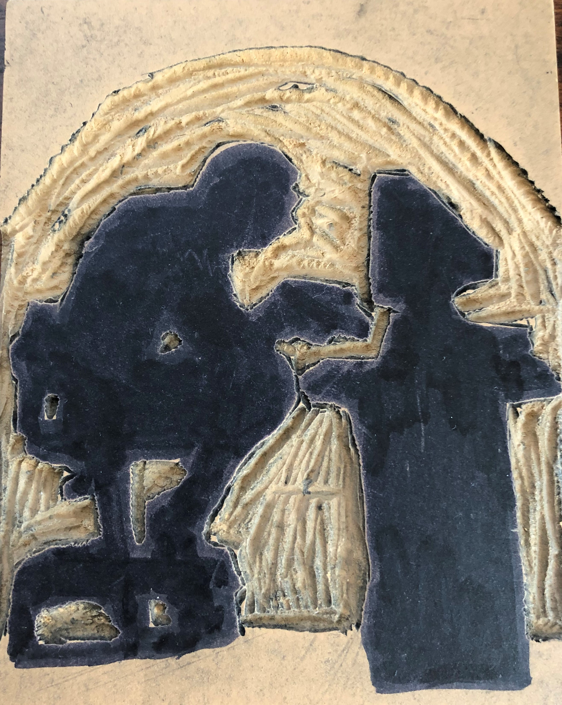

Computer Man
The Life of a programer.
The life of a programmer can be tough. You tend to spend hours which turns to days which turns to weeks trying to create mechanics and fix bugs for a program or even a game. I know through many rough experiences in the past. This carving that I made for my 2D Design and Color class illustrates what a programmer does most of the time.